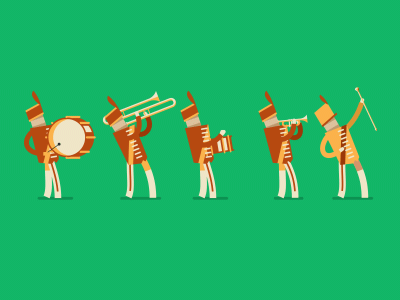
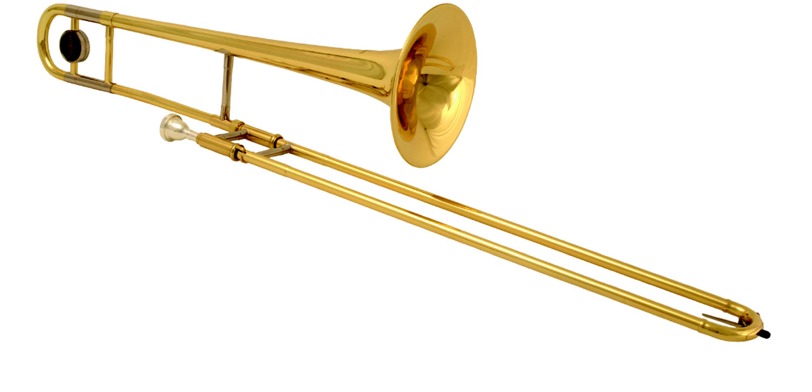

The trombone is a musical instrument in the brass family. Like all brass instruments, sound is produced when the player’s vibrating lips cause the air column inside the instrument to vibrate.The word trombone derives from Italian tromba (trumpet), so the name means "large trumpet".
Today, the trombone can be found in wind ensembles/concert bands, symphony orchestras, marching bands, military bands, brass bands, and brass choirs. In chamber music, it is used in brass quintets, quartets, or trios, or trombone trios, quartets, or choirs. The size of a trombone choir can vary greatly from five or six to twenty or more members. Trombones are also common in swing, jazz, merengue, salsa
 The trombone is one of the few wind instruments that can produce a true glissando, by moving the slide without interrupting the airflow or sound production. Unlike most other brass instruments in an orchestral setting, the trombone is not usually considered a transposing instrument. Prior to the invention of valve systems, most brass instruments were limited to playing one overtone series at a time; altering the pitch of the instrument required manually replacing a section of tubing or picking up an instrument of different length.